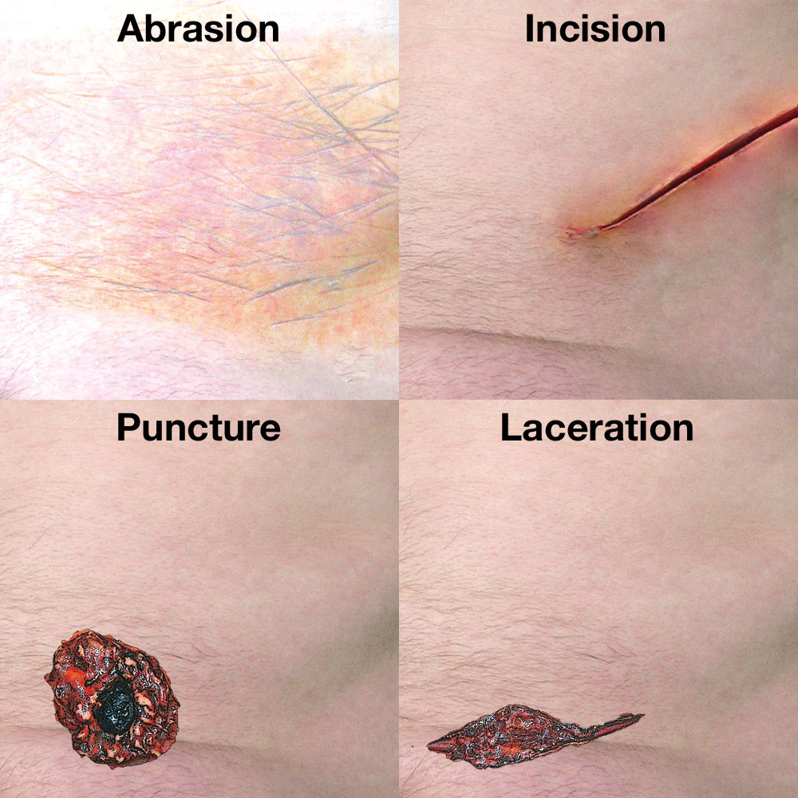
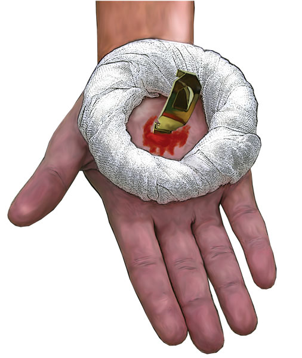
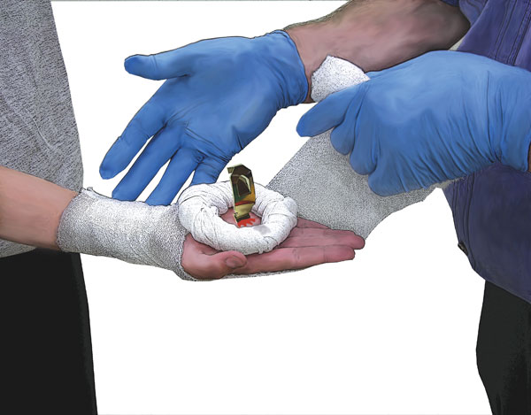
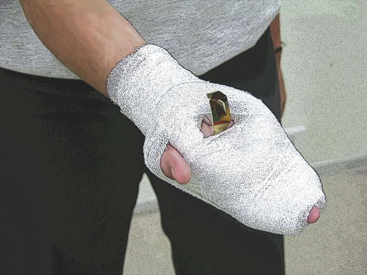
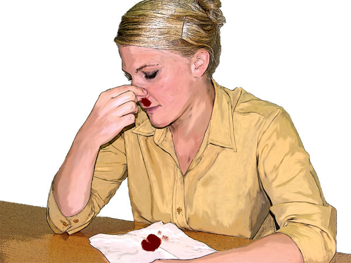

Bleeding
Bleeding
The body must have enough circulating blood volume to keep the body functioning, and keep the organs supplied with oxygen. Blood consists of red cells, which convey oxygen throughout the body; white cells, which fight introduced infection; platelets, which assist in the clotting process; and plasma, the fluid portion of blood. There are between five and seven litres of blood in the average adult body which makes up 7-8% of the body weight.
Blood is moved around the body under pressure by the heart and blood vessels. Without an adequate blood volume and pressure, the human body soon collapses. Bleeding, or haemorrhage, poses a threat by causing both the volume and the pressure of the blood within the body to decrease through blood loss when blood vessels rupture due to a severe injury.
Bleeding is one of the common causes of death in accidents. The aim of the first aider is to reduce the loss of blood from the casualty.
External bleeding
External bleeding is usually associated with wounds. Serious wounds involve damage to blood vessels. Damage to an artery is characterised by bright red blood which can spurt with each heartbeat. Damage to veins appears as a darker red and tends to flow. Capillary damage is associated with wounds close to the skin and is a bright red and oozes.
A wound is caused when our body tissue is torn or cut. Types of wounds include abrasions, amputations, incisions, lacerations and punctures.

Abrasion: is a wound where the skin layers have been scraped off from a fall on a rough surface, pieces of shells, claws of animals, machinery etc. These wounds have torn or irregular edges and they tend to bleed less.
Amputation: is the severing or partial severing of part of the body, such as a limb or part of a limb.
Incision: is a wound characterised by ‘slicing’ as with a sharp knife or sharp piece of metal. It is often characterised by a narrow wound which has cut cleanly and bleeds extensively.
Laceration: is a jagged-edge wound with associated tissue loss, such as from a barbed wire fence injury, or where a rider’s ankles, knees, elbows or wrists have abraded at speed, colliding with a road surface.
Puncture wounds are perforations, from anything from a corkscrew to a bullet, and generally with a limited external area but potentially quite deep, affecting internal organs.
Some bleeding, such as Varicose veins, can often rupture with little or no injury.

Care and Treatment
Life Threatening Bleeding
 call Triple Zero (000) for an ambulance
call Triple Zero (000) for an ambulance
 put on disposable gloves if available
put on disposable gloves if available
 remove or cut clothing to expose the wound
remove or cut clothing to expose the wound
 check the wound for visible foreign bodies
check the wound for visible foreign bodies
 apply direct pressure over the wound with a sterile or clean pad
apply direct pressure over the wound with a sterile or clean pad
 the casualty may be able to apply direct pressure themselves
the casualty may be able to apply direct pressure themselves
 lie the casualty down if not already in this position
lie the casualty down if not already in this position
 raise and support the injured part above the level of the heart if possible
raise and support the injured part above the level of the heart if possible
 apply a dressing and a firm bandage to hold the pad in place
apply a dressing and a firm bandage to hold the pad in place
 check circulation
check circulation
 reassess circulation every 30 minutes
reassess circulation every 30 minutes
 treat for shock if required
treat for shock if required
 check circulation regularly to ensure bandage is not too tight
check circulation regularly to ensure bandage is not too tight
 regularly monitor and record level of consciousness, pulse and breathing
regularly monitor and record level of consciousness, pulse and breathing
If unable to stop the bleeding consider a constrictive bandage
 cut or remove all clothing from the upper part of the affected limb
cut or remove all clothing from the upper part of the affected limb
 select a firm wide bandage (minimum 5cm) that is not too elastic
select a firm wide bandage (minimum 5cm) that is not too elastic
 apply bandage firmly to limb and tighten until bleeding stops
apply bandage firmly to limb and tighten until bleeding stops
 DO NOT cover the bandage – ensure that the constrictive bandage remains easily seen
DO NOT cover the bandage – ensure that the constrictive bandage remains easily seen
 Constrictive bandages are a measure of last resort, and should only be used in a life threatening situation where all other methods have failed.
Constrictive bandages are a measure of last resort, and should only be used in a life threatening situation where all other methods have failed.
Bleeding from wounds
 put on disposable gloves if available
put on disposable gloves if available
 check the wound for foreign matter
check the wound for foreign matter
 immediately apply pressure to stop any bleeding
immediately apply pressure to stop any bleeding
 bring the sides of the wound together and press firmly
bring the sides of the wound together and press firmly
 if a penetrating object is present
if a penetrating object is present
 build up padding around the object for bleeding control and support
build up padding around the object for bleeding control and support

 apply a firm roller or triangular bandage to support padding
apply a firm roller or triangular bandage to support padding

 apply a non-stick dressing and a firm roller bandage
apply a non-stick dressing and a firm roller bandage

 immobilise and elevate the injured limb if injuries permit
immobilise and elevate the injured limb if injuries permit
 DO NOT remove any penetrating object
DO NOT remove any penetrating object
 DO NOT put pressure over penetrating object
DO NOT put pressure over penetrating object
NoseBleed
 put on disposable gloves if available
put on disposable gloves if available
 have the casualty pinch the fleshy part of the nose just below the bone
have the casualty pinch the fleshy part of the nose just below the bone
 have the casualty lean slightly forward
have the casualty lean slightly forward
 ask the casualty to breathe through their mouth
ask the casualty to breathe through their mouth
 maintain the pressure and posture for at least 10 minutes
maintain the pressure and posture for at least 10 minutes
 a longer time may be needed in hot weather or after exercise or if the casualty has high blood pressure
a longer time may be needed in hot weather or after exercise or if the casualty has high blood pressure
 apply cool compress to the nose, neck and forehead
apply cool compress to the nose, neck and forehead
 if bleeding persists, obtain medical aid
if bleeding persists, obtain medical aid
 advise the casualty not to blow or pick their nose for several hours or to swallow blood
advise the casualty not to blow or pick their nose for several hours or to swallow blood
Amputation
 treat as for bleeding from wounds
treat as for bleeding from wounds
 after bleeding is controlled
after bleeding is controlled
 collect amputated part – keep dry, DO NOT wash or clean
collect amputated part – keep dry, DO NOT wash or clean
 seal the amputated part in a plastic bag or wrap in waterproof material
seal the amputated part in a plastic bag or wrap in waterproof material
 place in iced water – DO NOT allow the amputated part to come in direct contact with ice. Freezing will kill tissue
place in iced water – DO NOT allow the amputated part to come in direct contact with ice. Freezing will kill tissue
 ensure the amputated part goes to the hospital with the casualty. Often the part can be re-attached using microsurgery
ensure the amputated part goes to the hospital with the casualty. Often the part can be re-attached using microsurgery
If bleeding occurs through the existing dressing, place a second dressing over the first leaving the existing dressing in place. Remove and replace only the bandage and padding. Maintain direct pressure over the bleeding area as much as possible. Avoid disturbing the bandage or pad once the bleeding has been controlled.
Wounds can be cleaned with clean water or sodium chloride.

With all wounds, the casualty should obtain medical advice for tetanus prevention.
Internal bleeding
Internal bleeding is classified as either visible, in that the bleeding can be seen, or concealed, where no direct evidence of bleeding is obvious.
Always consider internal bleeding after injury, understanding it cannot be controlled by the first aider.
In most instances, obtaining an adequate history of the incident or illness will give the first aid provider the necessary clue as to whether internal bleeding may be present.
Remember that current signs and symptoms, or the lack of them, do not necessarily indicate the casualty's condition.
Certain critical signs and symptoms may not appear until well after the incident due to the stealth of the bleed, and may only be detected by the fact that the casualty's observations worsen despite there being no visible cause.
Visible Internal Bleeding
Visible internal bleeding is referred to this way because the results can be seen in bleeding from:
 Anus or vagina – usually red blood mixed with mucus
Anus or vagina – usually red blood mixed with mucus
 Ears – bright, sticky blood or blood mixed with clear fluid
Ears – bright, sticky blood or blood mixed with clear fluid
 Lungs – frothy, bright red blood coughed up by the casualty
Lungs – frothy, bright red blood coughed up by the casualty
 Stomach, bowel or intestines – bright, dark or tarry blood
Stomach, bowel or intestines – bright, dark or tarry blood
 Under the skin (bruising) – the tissues look dark due to the blood under the skin
Under the skin (bruising) – the tissues look dark due to the blood under the skin
 Urinary tract – dark or red coloured urine
Urinary tract – dark or red coloured urine
Concealed Internal Bleeding
Detecting internal bleeding relies upon good observations and an appreciation of the physical forces that have affected the casualty. In these cases, the first aid provider relies heavily on history, signs and symptoms. If you are unsure, assume the worst and treat for internal bleeding.
Remember to look at the important observations that may indicate internal bleeding, which include:
 Skin appearance
Skin appearance
 Conscious state
Conscious state
 Pulse
Pulse
 Respiration
Respiration

Signs and Symptoms
 pale, cool, clammy skin
pale, cool, clammy skin
 thirst
thirst
 rapid, weak pulse
rapid, weak pulse
 rapid, shallow breathing
rapid, shallow breathing
 'guarding' of the abdomen,with foetal position if lying down
'guarding' of the abdomen,with foetal position if lying down
 pain or discomfort
pain or discomfort
 nausea and/or vomiting
nausea and/or vomiting
 visible swelling of the abdomen
visible swelling of the abdomen
 gradually lapsing into shock
gradually lapsing into shock

Care and Treatment
 call Triple Zero (000) for an ambulance
call Triple Zero (000) for an ambulance
 put on disposable gloves if available
put on disposable gloves if available
 if conscious – lie the casualty down with legs elevated and bent at the knees
if conscious – lie the casualty down with legs elevated and bent at the knees
 if unconscious – recovery position and elevate the legs if possible
if unconscious – recovery position and elevate the legs if possible
 reassurance
reassurance
 treat any injuries
treat any injuries
 give nothing by mouth
give nothing by mouth